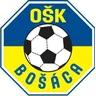

Posledný zápasStarší žiaci U15
Výsledok 5:3
 OFK Čachticehostia
OFK ČachticehostiaVýhrapolčas 3:1
Návrh webu · nie je to oficiálna stránka klubu
IV. liga starších žiakov U15, 6. miesto z 9
Posledný zápasStarší žiaci U15
Výsledok 5:3
OFK ČachticehostiaVýhrapolčas 3:1
4výhry
6prehier
1 remíza · skóre 35:56
Všetky súťaže v ročníku 2026/27.
IV. liga starších žiakov U15
| # | Tím | Z | V | R | P | Skóre | B |
|---|---|---|---|---|---|---|---|
| 1 | 12 | 12 | 0 | 0 | 78:11 | 36 | |
| 2 | 12 | 10 | 0 | 2 | 72:30 | 30 | |
| 3 |  OŠK Bošáca | 12 | 7 | 0 | 5 | 38:29 | 21 |
| 4 | 11 | 5 | 1 | 5 | 30:34 | 16 | |
| 5 | 11 | 4 | 1 | 6 | 46:57 | 13 | |
| 6 | 11 | 4 | 1 | 6 | 35:56 | 13 | |
| 7 | 12 | 3 | 1 | 8 | 12:55 | 10 | |
| 8 | 11 | 3 | 0 | 8 | 26:38 | 9 | |
| 9 | 12 | 1 | 2 | 9 | 28:55 | 5 |
Hráči, ktorí v kalendárnom roku 2026 nastúpili alebo boli v nominácii na zápas (podľa Sportnetu). Pri mládeži uvádzame len mená.